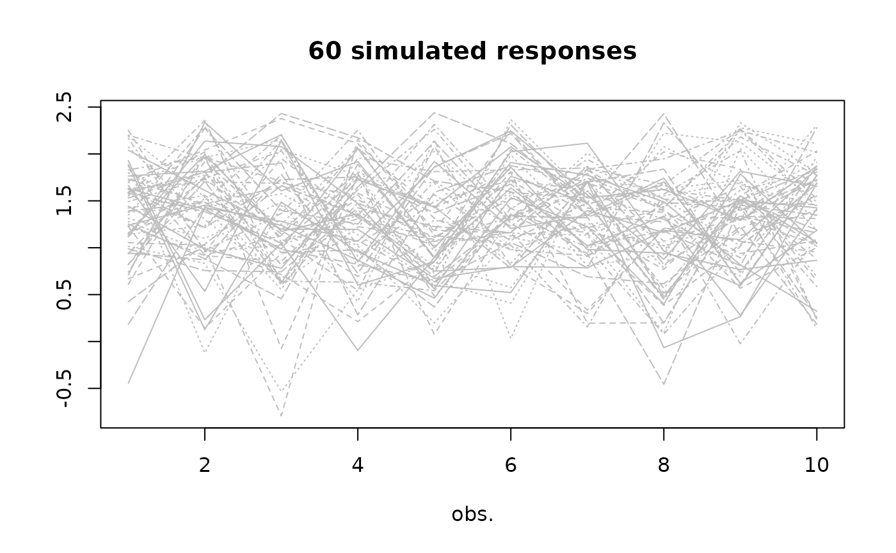

Plot method for NSGEV objects.
A NSGEV object
Not used.
An integer. The value 1 will lead to a plot
with the observation number used for the \(x\) axis. With the
value 2 the \(x\) axis is the covariate, assuming that
there is only one covariate.
A numeric vector with two probabilities used to set
the ylim parameter of plot.default. The model
quantiles for these probabilites are computed and added to the
range used to choose ylim.
Not used yet.
Other arguments to be passed to methods.
Nothing.
example(NSGEV)
#>
#> NSGEV> df <- data.frame(t = 1:10)
#>
#> NSGEV> ## built a model with given coefficients
#> NSGEV> psi <- c("alpha" = 1, "beta" = 0.01, "delta" = 0.6, "xi" = 0.06)
#>
#> NSGEV> ns0 <- NSGEV(formulas = list("loc" = ~ alpha + beta * t, "scale" = ~ delta, "shape" = ~ xi),
#> NSGEV+ data = df, psi = psi)
#>
#> NSGEV> ## simulate a path
#> NSGEV> set.seed(1234)
#>
#> NSGEV> ysim <- simulate(ns0, nsim = 1, psi = psi)
#>
#> NSGEV> df2 <- cbind(df, y = ysim[ , 1L])
#>
#> NSGEV> ns1 <- NSGEV(formulas = list("loc" = ~ alpha + beta * t, "scale" = ~ delta, "shape" = ~ xi),
#> NSGEV+ data = df2, response = "y", psi = psi, est = "optim")
#>
#> NSGEV> ## try an exponential link
#> NSGEV> ns2 <- NSGEV(formulas = list("loc" = ~ exp(alpha + beta * t), "scale" = ~ delta, "shape" = ~ xi),
#> NSGEV+ data = df2, response = "y", psi = psi, est = "optim")
#>
#> NSGEV> ## compare the estimation with that of ismev::gev.fit
#> NSGEV> require(ismev)
#>
#> NSGEV> ns1.ismev <- gev.fit(xdat = df2$y, ydat = as.matrix(df), mul = 1, show = FALSE)
#>
#> NSGEV> rbind("NSGEV" = c(ns1$estimate, "negLogL" = ns1$negLogL),
#> NSGEV+ "ismev" = c(ns1.ismev$mle, "negLogL" = ns1.ismev$nllh))
#> alpha beta delta xi negLogL
#> NSGEV 1.143777 -0.002918431 0.6033124 -0.4359059 8.22994
#> ismev 1.143704 -0.002906355 0.6032869 -0.4358915 8.22994
#>
#> NSGEV> ## Try an expoential link
#> NSGEV> ns2.ismev <- gev.fit(xdat = df2$y, ydat = as.matrix(df), mul = 1, mulink = exp, show = FALSE)
#>
#> NSGEV> rbind("NSGEV" = c(ns2$estimate, "negLogL" = ns2$negLogL),
#> NSGEV+ "ismev" = c(ns2.ismev$mle, "negLogL" = ns2.ismev$nllh))
#> alpha beta delta xi negLogL
#> NSGEV 0.3976449 -0.11871098 1.5582157 -1.0861830 8.106294
#> ismev 0.1284920 -0.00155176 0.6035595 -0.4351343 8.230150
plot(ns1, which = 1)

plot(ns1, which = 2)